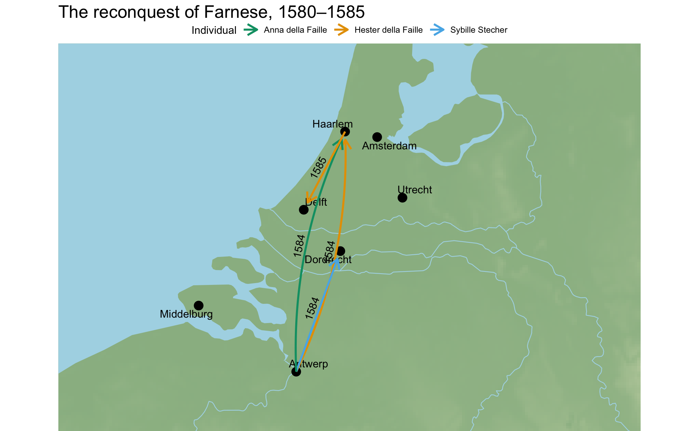
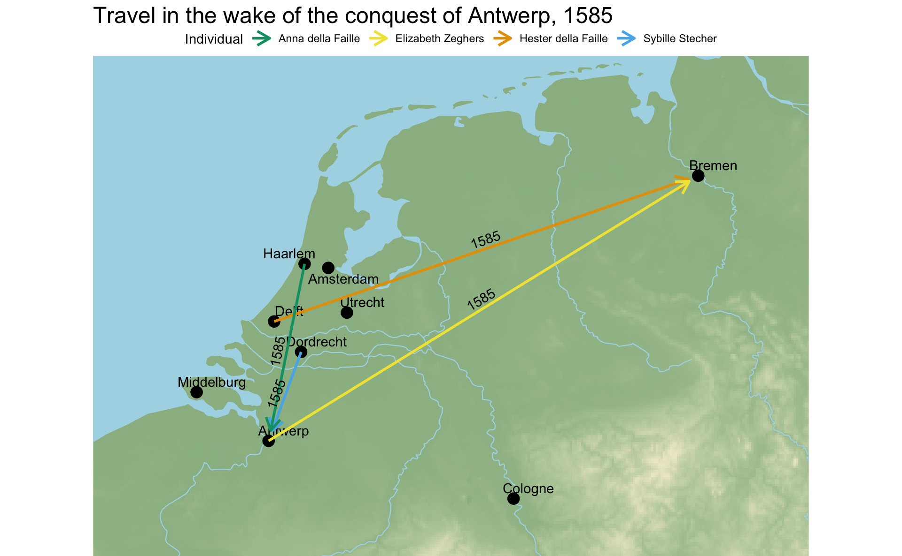
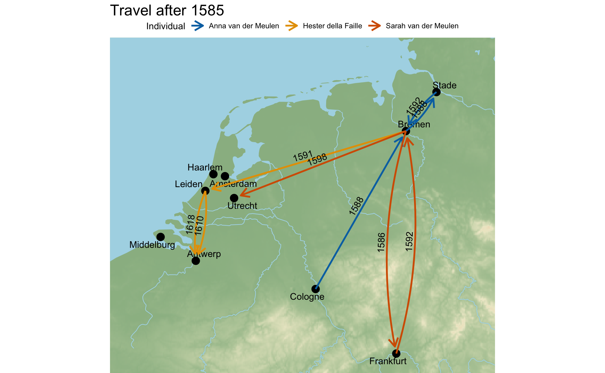

The movements of the women in the families
Visualizing female travel
There were three distinct periods of movement for the Della Faille and Van der Meulen siblings centered around the Dutch Revolt and the conquest of Antwerp by Farnese in 1584.
Before the conquest of Antwerp
Already in the 1570s the widow Elizabeth Zeghers sent her three daughters and youngest son to live in Cologne. She returned to Antwerp with her children in 1582 except for her eldest daughter Anna, who had married and remained in Cologne. As Farnese’s armies closed in on Antwerp all of the individuals in the Van der Meulen and Della Faille families discussed plans of what to do if and when the city fell. Meanwhile, many of the women in the Della Faille family left Antwerp upon the approach of Farnese. Anna della Faille retreated to Haarlem with her husband. Her sister-in-law, Sybille Stecher, who was pregnant at the time, left for Dordrecht, while her husband, Marten della Faille, remained in Antwerp. In the spring of 1584 Hester della Faille left Antwerp for Haarlem with her older brother Jacques and his wife Josina Hamels. It was during her stay in Holland that Hester became engaged to and married Daniel van der Meulen, who was serving as a representative of Antwerp at the rebellious States General in Holland, thus bringing the Van der Meulen and Della Faille families together. After a brief period in Haarlem, Daniel and Hester moved to Delft, where the States General was meeting.
Travel as a direct result of the fall of Antwerp, 1585
As Farnese’s armies closed in on Antwerp all of the individuals in the Van der Meulen and Della Faille families discussed plans of what to do if and when the city fell. Marten della Faille was a strong loyalist, who hoped that the continued success of Farnese would lead to a general peace. He wrote to his wife Sybille in Dordrecht as early as the end of May 1585 about the successes of Farnese and his hope that Sybille would soon be able to return to Antwerp. Marten also wrote to his sister Anna in Haarlem to try to coordinate the travel of his wife, his sister, and his brother-in-law back to Antwerp. Over the course of the correspondence Marten put forward multiple people who might be sent to assist Sybille in traveling back down to Antwerp with her children, including their daughter who was born in Dordrecht in June 1585. However, in the end it seems that Sybille largely coordinated her own journey back to Antwerp with the help of family members then present in Holland. Marten was still unclear of her exact route in early September as she began her journey mere weeks after Farnese took control of the city. Sybille probably did not travel unaccompanied, but she was more than capable of organizing the travel of her family back to Antwerp.
For those unwilling to live under Spanish, Catholic rule in Antwerp the advances of Farnese brought great uncertainty. This can be seen in the correspondence between Jacques della Faille and his wife Josina Hamels, who were in Haarlem, on the one side, and the newly married Daniel van der Meulen and Hester della Faille, who were residing in Delft. The letters between the two couples, written by both the husbands and the wives, constantly discussed what to do if Antwerp fell, whether it would be safe to remain in Holland, where to go if this was not the case, and the possibilities of Hester and Josina traveling, as Hester was pregnant with her first child and Josina became aware of her third pregnancy almost immediately after the fall of Antwerp.
The crisis of 1585 and the moving across borders at a time of war led the Della Failles and Van der Meulens to all place a great emphasis on the dangers of travel. Though the members of these families often spoke of the general dangers of travel that affected both men and women, they tended to concentrate on the dangers that travel presented to women, particularly to pregnant women such as Hester, Suzanne—who were in the third trimester of their pregnancy when they traveled to Bremen—and the elderly such as Elizabeth, the mother of the Van der Meulen siblings. These features of the discourse over travel continued as the Van der Meulens attempted to settle into life in Germany while dealing with the contradiction in merchant families of the cultural desire to be together but the economic logic of geographic distance.

Travel and instability after 1585
The Van der Meulen and Della Faille siblings never resided in the same city after 1595 despite expressed desire to live near each other. Soon after the family reached Bremen in late September or early October Sara married a merchant named Antoine Lempereur and moved to Cologne alongside her sister Anna. The Van der Meulen siblings then created a mercantile company that centered on the fairs in Strasbourg and Frankfurt. Andries and Daniel would run the logistics of the company from Bremen, while the husbands of Anna and Sara would take a more active role in attending the fairs and traveling between Cologne, the fairs, and northern Germany. The situation was clearly one of economic logic, but it created a desire for both the men and women of the family to travel to see each other and show their continued affection for each other.
Of course, their hoped for return to Antwerp never materialized. Only Hester and Josina of the women discussed in this paper who left Antwerp as exiles ever returned to Antwerp, but both did so only with the signing of the 12-Year Truce in 1609. Hester visited her brother Marten—who she had not seen since 1584—in 1610 and again in 1618, but none of the individuals moved back to Antwerp. The Van der Meulen and Della Faille siblings continued to live in different cities, Daniel and Hester moved to Leiden in 1591, where they came into closer contact with Jacques and Josina in Haarlem; Sara left Frankfurt for Bremen and then moved to Utrecht in 1598, while Andries and his wife Suzanne joined Sara in Utrecht in 1607. Thus, they were never able to solve the contradiction of the desire to live near each other and the economic logic of geographic distance combined with the crisis caused by the political and religious division of the Low Countries. But, if nothing else, this situation kept the discussion of travel at the heart of the close emotional bonds that tied family members together.
